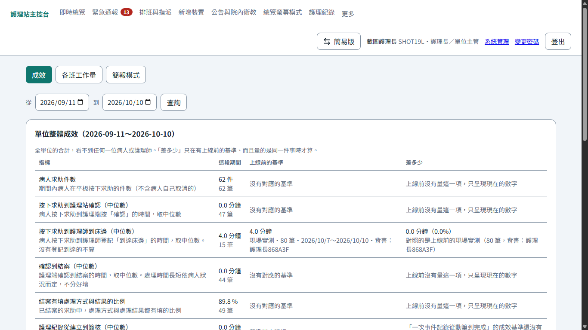
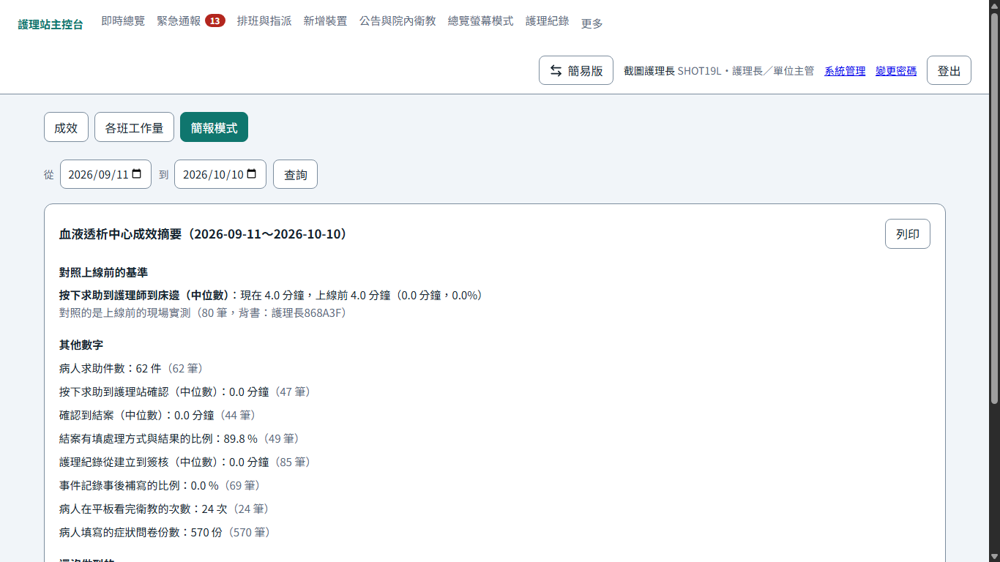
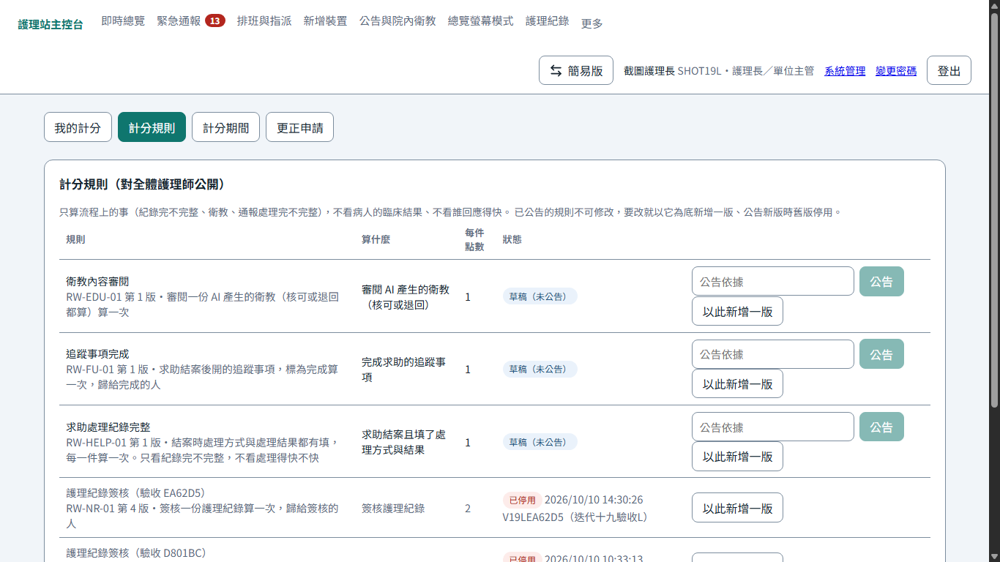
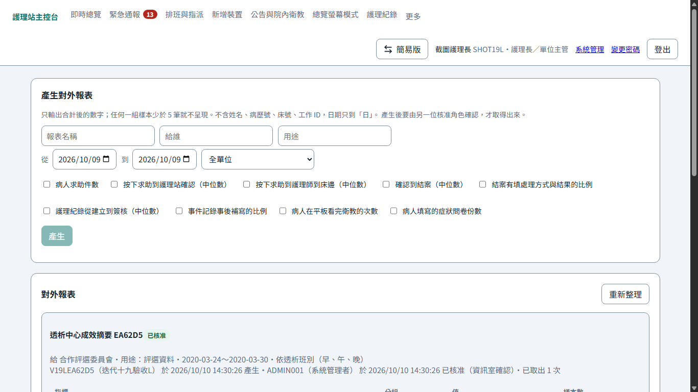
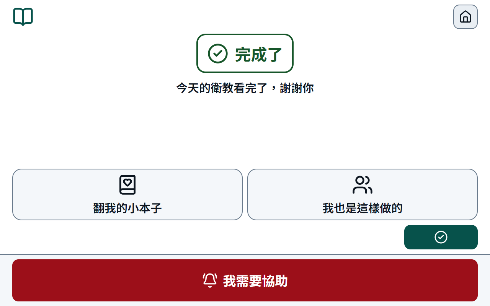
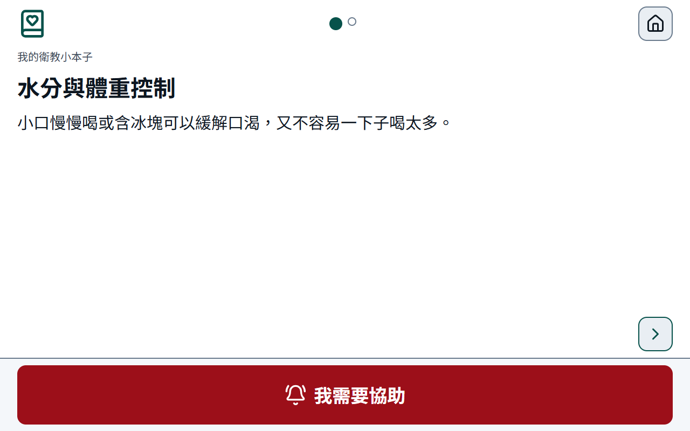
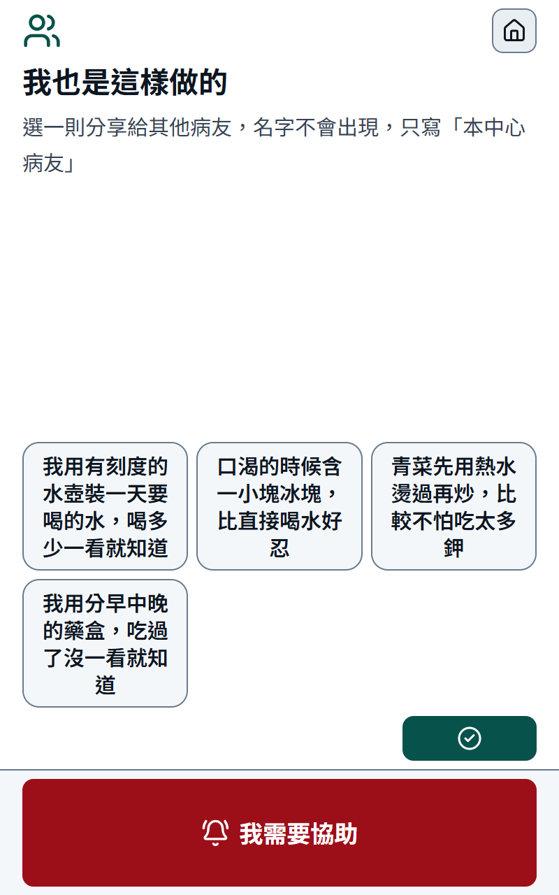
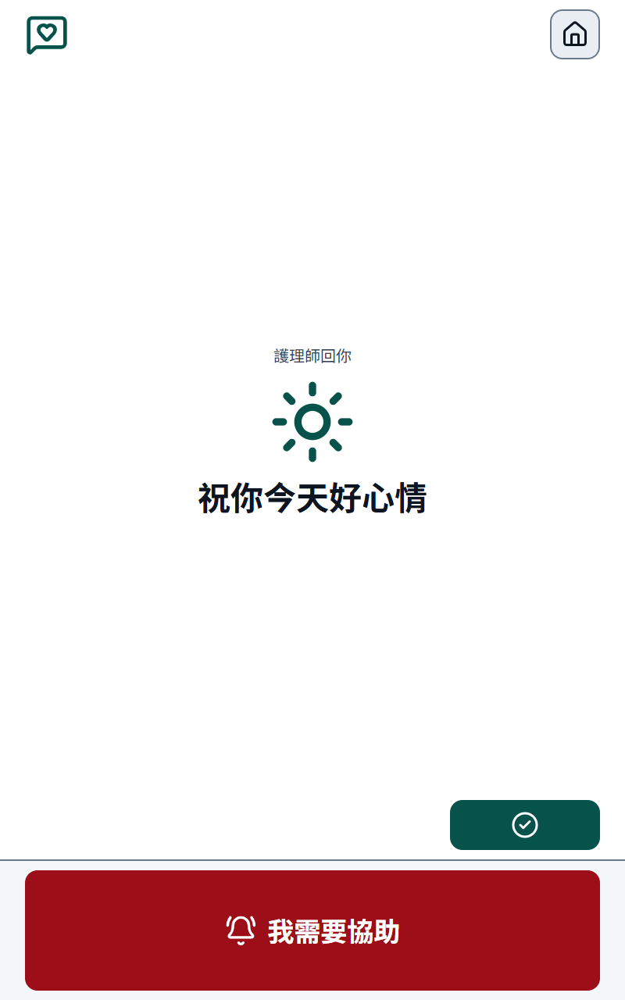
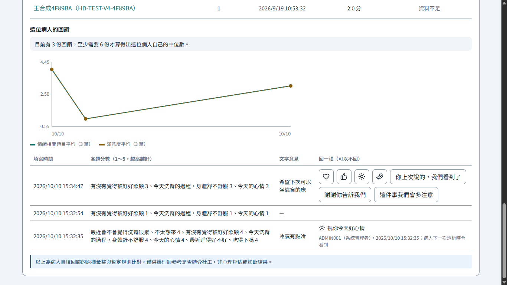

1014 週報 — 規則引擎、護理紀錄、管理儀表板、平板遊戲化第一步完成，四條規則的門檻請醫師確認（迭代 17.8～20）¶
期間：2026-10-07 ～ 2026-10-14
對應 commit：7c8912f → 迭代 20（1014 定版前會再補）
狀態：進行中（2026-10-10 週中草稿，1014 定版時收尾）
本週進度¶
- 1009～1010 遊戲化寫成兩份其他文件：院方希望平板上放三個遊戲，《透析中的遊戲化》依四個目的與單手、無聲、低刺激等限制挑出五款、建議三款；《之一：決定、開關與實作順序》記下使用者逐題的決定、九個開關、花園種滿與清空、圖與程式的來源。需求寫進 SRS（73 → 81 條），排成迭代 20～23
- 1010 院方三項意見：護理紀錄簽核後複製、貼進院內的正式紀錄（DART 預設、SOAP 可切），事件時間與院方量測寫在段落裡；緊急回報的圖示改成看圖就知道是什麼症狀；血壓圖加正常區間判斷不做（理由在 SRS FR-P11 補充說明）。前兩項是迭代 17.8，同日完成，清冊 Q-37 結案
- 1010 迭代 18 完成：風險分層提示、療程中預警、劑量調整參考三項高風險功能，加上 Kt/V 趨勢推估，一律由固定規則計算、不經 AI；每一則點得開依據、旁邊寫「僅供參考，非診斷結果」，只在護理站專業版；書面確認沒登記之前，真實病人一律不比對
- 1010 迭代 18.1：書面確認閘門從主機設定檔改放進系統管理，由系統管理者填文號與理由登記；四條規則的門檻換成依指引與研究查的建議值，請醫師確認（見待決事項）；迭代 18 的文件收尾補齊（進度報告、架構圖、測試手冊附錄）
- 1010 迭代 19 完成：成效與工作量（全單位的數字對照上線前的成效基準，沒有基準就照實寫；各班工作量；開會用的一頁式簡報，好的數字與還沒做到的放在同一頁），醫院管理層登入只看得到這一頁；獎勵制度只算流程上的四件事、沒有排名與總分，每位護理師看得到自己的每一筆並可提出更正，看別人的個人層級數字要護理部書面同意、規則公告、觀察期跑完才開得起來；對外報表只有合計、樣本少於 5 不出、要另一個人核准才拿得出去；對外展示環境一條指令建出資料全是虛構、與醫院沒有連線的另一套。計分規則全是草稿、兩頁預設關閉，要護理部確認（見待決事項）
- 1010 迭代 20 完成（遊戲化之一）：不必等任何遊戲，先讓問卷、衛教、跑馬燈做心理支援。做完問卷或衛教有一個安靜的「完成了」與一句感謝（與答案無關）；衛教測驗不再給病人看錯幾題，答對的主題收進「我的衛教小本子」；病友小撇步只能從預設的裡面選、不能打字，護理師核准才播、署名只到「本中心病友」；跑馬燈多「你知道嗎」；護理師可以（不是必須）對「想讓我們知道的事」回一張貼圖，病人下一次透析看到，護理端沒有未讀數與待辦。三個開關，只有第一個預設開；三個都關時跟以前一模一樣
完成內容¶
迭代 17.8：護理紀錄補上線前的缺口、緊急回報的圖示（1010）¶
紀錄在《迭代 17.8 修正紀錄》，手動測試在《迭代 17.8 分冊》（aa147～aa168）。
| 事項 | 現在的樣子 |
|---|---|
| 護理紀錄的位置 | 專業版主列第 7 項（原本在「更多」裡） |
| 格式 | 系統管理的營運參數切換：DART（預設）或 SOAP；只影響之後才建立的記錄 |
| 預填 | 事件時間與事件前最近一筆院方量測寫在段落裡，讀到 0 的不帶；「帶入處置後數值」補進 R（或 P）段 |
| 複製 | 簽核後整份或逐段複製；院內用 IP 開也複製得出來；稽核只記誰複製了哪一筆，不記內容 |
| AI | 沒開或失敗都走得完，畫面上沒有空白的區塊 |
| 緊急回報的圖示 | 十三個自畫的圖示，畫出症狀本身；仍然配字，紅色仍只給求助區 |
迭代 18：規則引擎與三項高風險功能（1010）¶
手動測試在《迭代 18 分冊》（ab1～ab26），做法在實作規格書 3.6、4.16。
| 事項 | 現在的樣子 |
|---|---|
| 規則 | 六條，全部是草稿：體重增幅、28 天內收縮壓低於門檻的次數、同一時段按同一種不舒服、同一時段收縮壓低於門檻、血紅素在上下限之外、Kt/V 趨勢推估 |
| 文字 | 一律是事實陳述（數值、次數、時間），範本裡寫「風險」「建議」「低血壓」這類字存不進去 |
| 在哪裡看 | 專業版即時總覽底下「判斷輔助：待檢視」、病人趨勢的「判斷輔助」、系統管理「判斷規則」；病人平板、簡易版、總覽螢幕都沒有 |
| 誰看過 | 逐則「已檢視・採納／未採納」（原因選填），全部留稽核 |
| 真實病人 | 書面確認沒登記、或規則沒有附臨床端出處的生效版本，一筆都不比對 |
迭代 18.1：書面確認閘門改放進系統管理、四條規則的建議門檻（1010）¶
紀錄在《迭代 18.1 修正紀錄》，手動測試在《迭代 18.1 分冊》（ab27～ab40）。
| 事項 | 現在的樣子 |
|---|---|
| 書面確認閘門 | 系統管理「判斷規則」：系統管理者按「登記書面確認」、填文號與理由；取消登記要理由；每一次都留紀錄。護理長只看得到。主機設定檔不再有這一項 |
| 四條規則 | 換成開發端依文獻查的建議值（下面待決事項的表），仍不是書面依據，照樣只對測試用的合成病人比對 |
| 既有的資料庫 | 啟動時四條各補一個草稿版本，舊版本不動 |
迭代 19：管理儀表板、獎勵制度與對外揭露（1010）¶
手動測試在《迭代 19 分冊》（ac1～ac35），做法在實作規格書 3.10、4.17。
| 事項 | 現在的樣子 |
|---|---|
| 成效與工作量 | 選單裡「成效與工作量」：九個全單位的數字、每日走勢；護理長與稽核另有各班工作量；一頁式簡報有「列印」。看不到任何一位護理師或病人 |
| 對照上線前 | 只在有上線前的基準、量的是同一件事、這段期間至少 5 筆時才寫「差多少」；成效基準還沒量，所以多數寫「基準尚未建檔」，不拿估計值頂替 |
| 醫院管理層 | 登入直接到成效頁，任何病人的資料都打不開（後端擋） |
| 獎勵制度 | 預設關閉。四條規則全是草稿（求助結案有填處理方式與結果、簽核護理紀錄、審閱衛教、完成追蹤事項），不看回應速度、不看病人的臨床結果、沒有排名；先跑「只計算不計分」的觀察期 |
| 我的計分 | 每位護理師看自己的每一筆，「這一筆不該算」「少算了一筆」都能申請更正；每次查看都留紀錄 |
| 個人層級 | 另一個開關，護理部書面同意、規則公告、觀察期跑完三件到齊才開得起來；開了之後護理長看得到每個人的件數（依工作 ID 排）、臨時調動找得到候補，每一次都要先寫用途，並留下誰查了誰 |
| 稽核軌跡 | 每一次查詢本身也留紀錄；畫面先選用途才查 |
| 對外報表 | 預設關閉。只有合計、任何一組不到 5 筆就不出、日期只到「日」；產生的人不能核准自己的，核准後才拿得出 CSV |
| 對外展示環境 | npm run showcase：另一個資料庫檔案、30 天的虛構資料，每一頁左下角標著「展示環境」；展示模式打不開正式的資料庫 |




迭代 20：遊戲化之一——平板現有功能的遊戲化（1010）¶
手動測試在《迭代 20 分冊》（ad1～ad30），做法與開發端的判斷在實作規格書 4.20。
| 事項 | 現在的樣子 |
|---|---|
| 完成記號與那一句 | 問卷、衛教做完多一頁：完成色的框、一個勾、「完成了」，底下一句（「謝謝，護理師會照這個照顧你」這一類）。只看是哪一種任務，不看答案；沒有動畫、沒有聲音。問卷先存在平板時，那一句照舊是「會自動送出」 |
| 測驗結果 | 開關開著時不再有「3／5」與叉叉：每一題一頁「一起看答案」（正確答案與說明），看不出錯了哪幾題；護理端照舊看得到答錯的知識點 |
| 我的衛教小本子 | 衛教做完的那一頁「翻我的小本子」：同一個主題連對兩題就收進來，之後答錯也不拿走；首頁不放這個入口 |
| 你知道嗎 | 跑馬燈多一類：老台灣的小常識、節令典故，AI 起草（送進去的只有月份）、護理師核准；關掉開關就停播 |
| 病友小撇步 | 衛教做完的那一頁「我也是這樣做的」，從最多四則預設小撇步裡點一則；沒有可以打字的地方；護理端核准清單多一則「病友小撇步：…（本中心病友）」，只寫選過幾次。預設 12 則在系統管理改 |
| 被聽見的回覆 | 病人趨勢的心情回饋表多一欄：四個貼圖、三句預設的話，點一下就送，一則只回一次；病人下一次透析開始時看到一次，不寫是哪位護理師。沒有未讀數、沒有紅點、沒有提醒 |
| 三個開關 | 「現有功能的小幅遊戲化」預設開（只呈現、不碰臨床判讀與隱私，比照「本次透析」面板）；病友小撇步、護理師回貼圖預設關。遊戲化其餘六個開關隨迭代 21～23 才出現 |





文件收尾（1010）¶
迭代 18 那一次漏了：兩份進度報告的檔頭還停在迭代 17.7、「已完成範圍」沒有 17.8 與 18；架構圖仍把規則引擎畫成規劃中的虛線；測試手冊的 API 附錄少算 11 條、漏列一條；首頁看不到 1010 的進度。18.1 一起補齊（修正紀錄第 4 節）。
遇到的問題與處理¶
| # | 問題 | 處理方式 | 狀態 |
|---|---|---|---|
| 1 | 迭代 18 把書面確認閘門放在主機設定檔（開發端判斷：「以設定強制」就是要動得到主機才改得了） | 使用者 1010 推翻：改放進系統管理，只有系統管理者、要文號與理由、留稽核；系統照樣擋下真實病人 | 已解（18.1） |
| 2 | 四條規則的門檻是開發端的示範值，問醫師時沒有起點 | 依 KDOQI、KDIGO、日本透析醫學會與大型研究查建議值，寫在備註；出處照樣空著，標不了生效 | 待醫師確認 |
| 3 | 測試手冊 API 附錄寫 146 條路由，實際 157 條；1005 的「確認下機」漏列 | 照後端啟動時印出的清單重數，補列；18.1 之後 158 條 | 已解 |
| 4 | 迭代 18 的文件收尾漏了進度報告的檔頭與已完成範圍、架構圖、首頁 | 18.1 一起補（修正紀錄第 4 節） | 已解 |
| 5 | 「班表」這種不要求權限的導覽項，醫院管理層與稽核角色也看得到（點進去全是 403） | 迭代 19 起唯讀角色只看得到明確給它們的項 | 已解 |
| 6 | 迭代 9 的驗收腳本寫死「預設關閉 3 項」，迭代 19 多兩頁預設關閉就不通過 | 改成比對共用定義的預設版位（實作規格書 1.1 第十三次） | 已解 |
| 7 | 迭代 20 驗收第 3 條要「答錯的題目與錯題數在病人端任何地方都看不到」，但既有的測驗結果就有「3／5」與叉叉 | 開關開著時改成每一題一起看答案（只列答錯的會洩漏哪幾題錯）；開關關著照舊（實作規格書 4.20） | 已解 |
| 8 | 預設小撇步裡「廔管」的「廔」不在平板自帶字型的子集裡，會改用系統字型畫 | 改寫成「血管通路」；新文字照 Big5 常用字範圍檢查一次（介面設計基準 2.6） | 已解 |
待決事項¶
要問醫師：四條規則的門檻（清冊 Q-03）。下面是開發端依指引與研究查的建議值；醫師確認之前，這四條只對測試用的合成病人比對。最快的問法是請護理長開啟系統管理「判斷規則」那一頁，逐條對著看。
| 規則 | 建議值 | 依據 | 要請醫師決定的 |
|---|---|---|---|
| 透析間體重增幅（風險分層） | 增加量達理想體重的 4.0%；上一次下機體重只往前找 3 天 | 文獻常引用的上限 4～4.5%（KDOQI）；巴西六年追蹤以 4% 為分界，達 4% 以上全死因死亡約兩倍；日本透析醫學會的目標是間隔一天 3%、間隔兩天 5% | 一條 4.0% 就好，還是分間隔一天／兩天兩條（要改程式）？ |
| 同一時段按同一種「不舒服」（療程中預警） | 近 6 次療程（兩週）有 2 次在差不多同一時間（前後 30 分鐘） | 沒有文獻直接訂；比照透析中低血壓研究「三成以上的療程發生」算經常發生（Flythe 等，2015）。同一篇指出以症狀定義的低血壓與預後沒有關聯 | 兩週兩次夠不夠？要不要只看某幾種不舒服（例如頭暈、抽筋）？ |
| 血紅素在上下限之外（劑量調整參考） | 10.0～11.5 g/dL，只看 35 天內的最近一筆 | KDIGO 腎性貧血指引：9～10 開始用紅血球生成刺激劑、使用中不維持在 11.5 以上；透析病人至少每月驗一次。健保與院方 protocol 可能不同 | 上限用 11.5 還是院內慣用的數字？請提供院內調整紅血球生成刺激劑的 protocol 正本（系統要逐字引用） |
| Kt/V 趨勢推估（適足性） | 推估下一次 低於 1.20 就提醒，至少 3 次、取最近 6 次 | KDOQI 適足性指引（2015）：目標 1.4、最低 1.2 | 提醒用 1.2 還是目標 1.4？院內多久驗一次 Kt/V？ |
順便請醫師看：兩條收縮壓規則的門檻（開始收縮壓 < 160 用 90、≥ 160 用 100）1005 已決定套用同院 IDH 系統，但回看天數（28 天）與次數（風險分層 1 次、療程中預警 3 次裡 2 次）是開發端暫定的。
選法與出處見《迭代 18.1 修正紀錄》第 3 節。醫師給了門檻與依據文件，系統管理者在「判斷規則」出新版本、填出處、標為生效。
其餘：
- Q-02：三項高風險功能的 TFDA 分類書面確認（法務／資訊室）。拿到之後在系統管理登記文號
- Q-31：至少一位護理師操作過簡易版；請長者在床上看過跑馬燈的速度
- 迭代 18 分冊
ab25：請醫師或護理長逐句讀一次判斷輔助的輸出文字，確認讀起來是事實不是結論
要問護理部：遊戲化的預設文字（迭代 20，不擋實作，開關照預設）：
- 病友小撇步的 12 則預設內容（系統管理 → 內容與選項 → 病友小撇步，開關開著才看得到）有沒有不適合的、要不要加
- 護理師回貼圖的四個貼圖與三句預設回覆（「你上次說的，我們看到了」「謝謝你告訴我們」「這件事我們會多注意」）合不合用
- Q-31：請長者在病床上看一次完成記號、小本子與「我也是這樣做的」（迭代 20 分冊
ad29）
要問護理部：獎勵制度與對外報表（迭代 19 做好了，這三題答覆之前，兩頁照預設關著）：
- Q-20：四條預設的計分規則（求助處理紀錄完整、護理紀錄簽核、衛教內容審閱、追蹤事項完成）哪些要用、權重多少、計分週期多長
- Q-04：個人層級的數字（護理長看每個人的件數、臨時調動的候補）要走什麼同意流程；同意之後開關的核准依據寫文號
- Q-21：誰核准資料離開醫院（現在暫由護理長與系統管理者，產生的人不能核准自己的）
下週規劃¶
- ~~迭代 19（管理儀表板、獎勵制度、對外揭露），接著~~ ~~遊戲化迭代 20～23~~ 遊戲化迭代 21～23（實作規格書 4.0.5；迭代 19、20 已於 1010 完成）。迭代 21 先寫《透析中的遊戲化之二：小花園的植物》子文件與起始插畫
- 對外展示環境在另一台機器上開一次（迭代 19 分冊
ac31～ac34） - 醫師答覆四條規則的門檻之後：出新版本、附出處（標為生效仍要等 Q-02）
- 第三次進院（實作規格書 4.19）照 1007 週報的規劃
參考：進度首頁